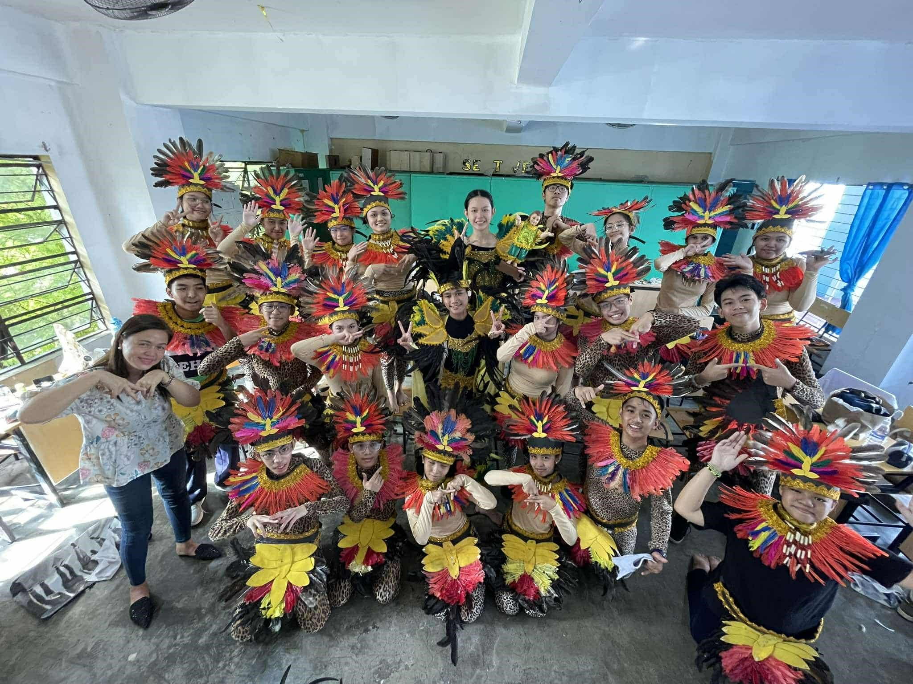

Beat the Heat .ೃ࿔☼*:･
October 4, 2024
After an intense class observation, we finally got a sweet little break to relax and recharge. We celebrated with an ice cream date with our Math teacher a fun, lighthearted reminder that learning can be enjoyable and rewarding. Between bites of our favorite flavors, there were plenty of laughs, stories, and moments of simple joy. It was the perfect way to unwind after all the hard work, proving that sometimes the best lessons come with a side of ice cream. Truly a well-deserved treat that made all the effort feel worthwhile!

When Science Turns Colorful ⋆˚𝜗𝜚˚⋆
January 20, 2026
Hands-on learning in Chemistry with Mam Rosalina Alonzo was such a fun and meaningful experience. Creating our own indicators allowed us to see acids and bases in action, turning abstract concepts into something tangible and easy to understand. It made the lesson more engaging and interactive, and we truly appreciated how experimenting ourselves helped deepen our understanding of the topic.

Celebrating Culture Through Dance .ೃ࿔*:･
November 28, 2025
From colorful costumes to booming drums, our class truly brought the Ati-Atihan festival to life! The energy was contagious as we danced, laughed, and celebrated together, creating unforgettable memories along the way. Every beat, every twirl, and every smile captured the spirit of the festival perfectly.
